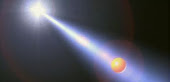

Sponsored by B.C.O.M.C Sponsored by B.C.O.M.C
Sponsored by B.C.O.M.C Sponsored by B.C.O.M.CLong ago, before men ever walked the earth. Before suns exploded. Before our universe was even created, there was nothing. There were no galaxies spinning, or spaceships soaring. No oceans crashing and no mountains erupting. Not a single star sparkled. Not a single atom rocketed across space. There was only darkness. And emptiness. The world had not yet begun... That is when it happened. The very first thing to ever exist in the history of everything had come to be. Bubble. Out of the eternal night, a light burst forth. The light of power that illuminated all of space with its glow. And it began to fade. Out from the evanescent light came Bubble, our one and only true god. He existed from pure light, and had no physical form. He was weightless and colorful. He was the creator of all. The world he had come upon was not one he could yet be god of. He had to create it with his magic light... Bubble tore a single piece of the light that he consisted of, and molded it with his majestic hands. He stretched and pulled it tight, until he had a sphere. He held it in both hands and sent it lightyears away, across the deep, black space. The light exploded, sending a slash of beautiful yellow light across the black. Bubble looked down to behold what he had created of his own flesh. Before him floated a single, titanic bubble. It sparkled and shimmered with beauty. The bubble was slightly transparent, and bigger than anything could ever be. Slowly, it began to swirl, moving faster and faster. It orbited Bubble, for Bubble is, was, and created gravity itself. Bubble was the center of everything. He had created the very first bubble...
But this would not be the only one. Bubble reached into himself and sculpted another ball of light, this one was purple. Once again, there was an explosion of light. Now two bubbles orbited around our God. He was happy, for he knew that this was only the beginning. Once again, he took some of his light and created a green bubble. Then a blue one, and a red one. He created ten, each as beautiful as the other. But lastly, he created the aqua marine bubble. Looking into this bubble, something was occurring. Tiny pieces of glitter floated towards the interior. So tiny only a God could notice. These were stars. They were forming in all ten bubbles that our God had created... This made Bubble even happier, and he didn't stop there. Light after light Bubble formed more and more bubbles around him. Tens, hundred, thousands. Each one a different color. Bubble had created the world. Deep inside each of these bubbles, miraculous things happened on a much smaller scale. Stars were forming, moving around and knocking into each other. Occasionally, one would hit the side of its bubble, and explode into dust. This dust would form the nebulas, and therefore more stars. This dust, after many years, would form planets and asteroids. Some were huge balls of rock, some were giant spheres of gas. Elements and compounds were created. The bubbles began to fill up. Each bubble had its own unique color, with its own unique world inside... Still though, this was just the beginning. Thousands of years would come to pass, and every hour Bubble would form another ball of light, and heave it across space. This would form yet another unique bubble. Eventually orbiting around our creator was trillions and trillions of bubbles, and over time each had its own universe. Now Bubble had made a real world. But it wasn't just stars, or rocks, or gas in these worlds. Life came to be. Out of water and mud crawled living, breathing animals. Bubble took notice of this, and studied these creatures. Each was unique and special. Some were stupid, yet others were wise, but one thing they all had in common was violent nature. Every living thing was violent in one way or another. Different species, and those of the same species, would compete and fight. Some animals were smart enough to build cities and vessels, and go beyond their own systems. But no matter how far they would go, no living thing could leave their own bubble. And that was the way Bubble liked it. This was his world, with all different universes, and all different creatures. But inside one lime green bubble, was us... This lime green bubble is our universe. One which we could never leave. Inside this bubble were galaxies, and within these galaxies was one star. Our sun. Orbiting this sun was a small rocky planet made over millions of years of crashing rocks and clustering dust. Earth. It had heat, water, vegetation, an atmosphere of gas, it was a wonderful structure for life. Many species were born on this planet. And they, like all other animals, fought. But one species proved superior to all others on this planet. Humans. We fought and killed one another, forced other species to extinction, enslaved others. We were stronger than any other species.

Eventually, we advanced in technology. We built ships that could travel through space. We built cities larger than any mountains. We thought we were magnificent, but we were wrong. We are insignificant compared to our universe wrapped up inside of our bubble. We are nothing compared to the trillions and trillions of other bubbles. So do what you will, but humans are small. But that isn't bad. We live inside of this huge bubble with limitless possibilities for our lives... All living things, no matter how big or small, no matter what planet they are from, or what bubble they are in, can do anything they please. Go anywhere, fight anything, and say whatever. But there is one rule. We have to acknowledge why this is possible. There are trillions of bubbles orbiting beyond this one. Orbiting around our one god. The center of light and gravity itself. Our one god who created the universe from his own light. The very first to ever exist in this world... Bubble... Everything you know and love is all thanks to our loving god, Bubble. Remember this, and spread our knowledge. That is Bubblism.